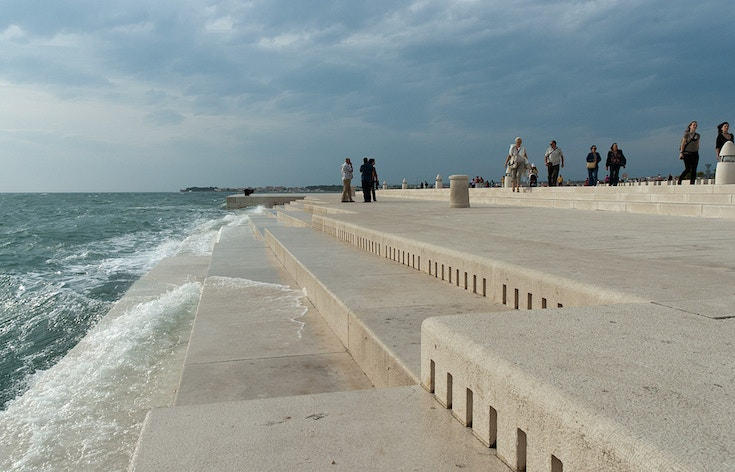

Kelionių agentūra „Į tolį“
Bičiuli!
Ar tu nori pailsėti nuo rutinos? Gal darbas biure tau jau įgriso iki gyvo kaulo? O gal jau seniai nori pamatyti daugiau pasaulio?
Jei bent į vieną iš šių klausimų atsakei taip - žinok, kad mes tau galime padėti!
Siūlome tau ypatingą pasiūlymą - 10 dienų kelionę į Kroatiją! Žemiau pateikiame objektus, kuriuos galėsi apžiūrėti kelionės metu:
- Dubrovnikas
George Bernard Shaw rašė: „Tie, kas ieško rojaus Žemėje, turėtų atvykti į Dubrovniką ir čia jį suras“.
- Plitvicos ežerų nacionalinis parkas
Šis turkių spalvos ežerų ir įspūdingų krioklių parkas - Kroatijos perlas.
- Rovinis
Tai kurortinis miestelis Istros pusiasalyje, vis labiau populiarėjantis tarp turistų.
- Zadaro vargonai
Šie vargonai - vieninteliai tokie pasaulyje!

- Pulos amfiteatras
Tai vienas iš didžiausių romėnų amfiteatrų pasaulyje.
- Zagrebas
Kroatijos sostinė ir didžiausias miestas.

Jei susidomėjai, būtinai parašyk mums elektroniniu paštu: itoli@kelioniuagentura.com
Aplankyk saulėtąją Kroatiją jau šiandien!
Austėja Laurikaitytė